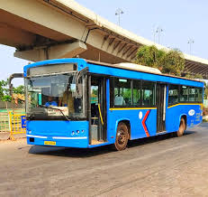
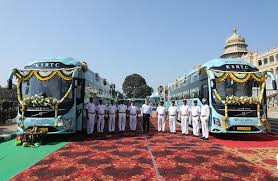

Adarsh transport |
Home About Sevices Conatct |
slogan"Beyond transportation, a seamless experience" |
Our Services Road Transport: |
 | |
|  |
History :Indore's transportation history, featuring public buses, radio taxis, and e-bikes, began with the incorporation of Indore City Transport Services Limited in 2005, a PPP scheme operating under Atal Indore City Transport Services Ltd, now operating on 36 routes and 170 bus stops. |
Contact us:-Email : indoretransport@gamil.com |